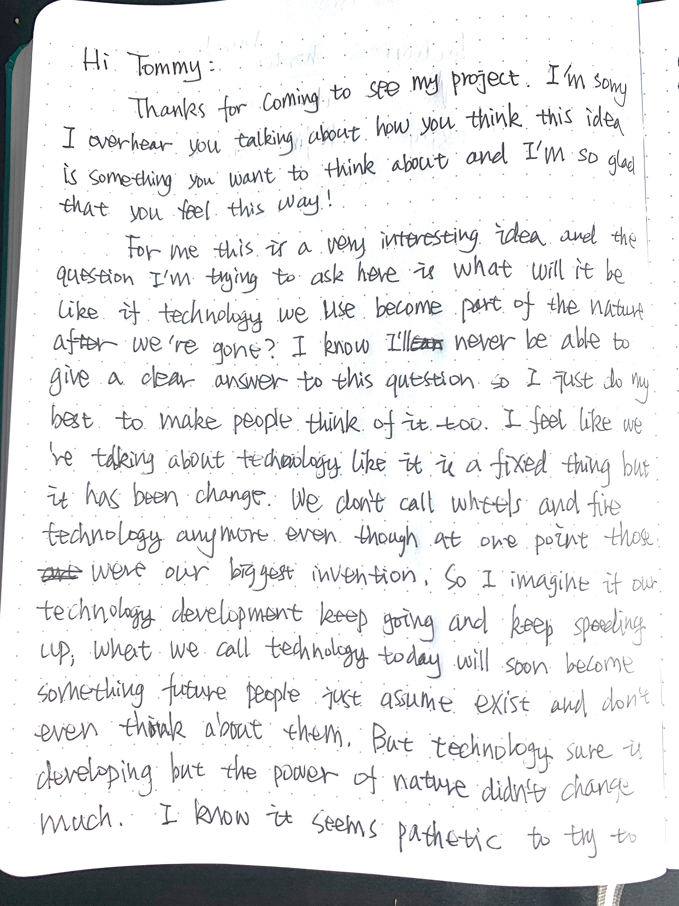
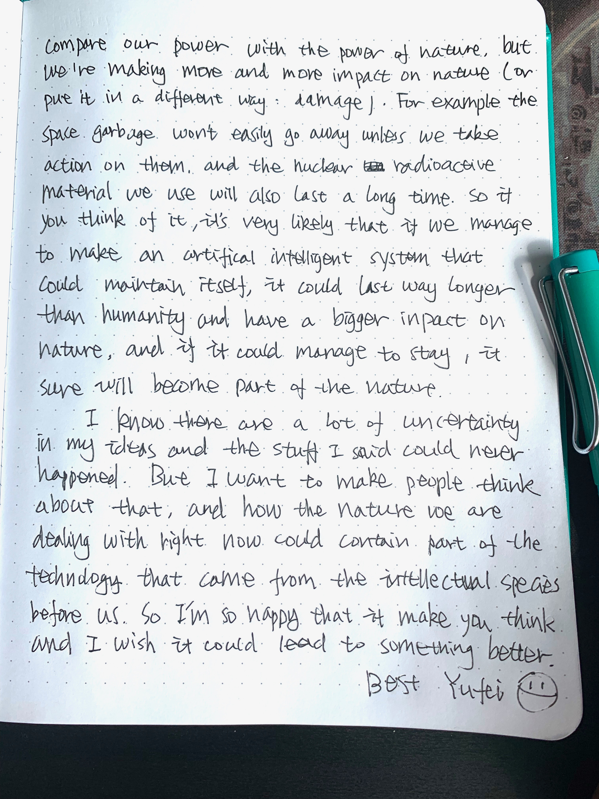
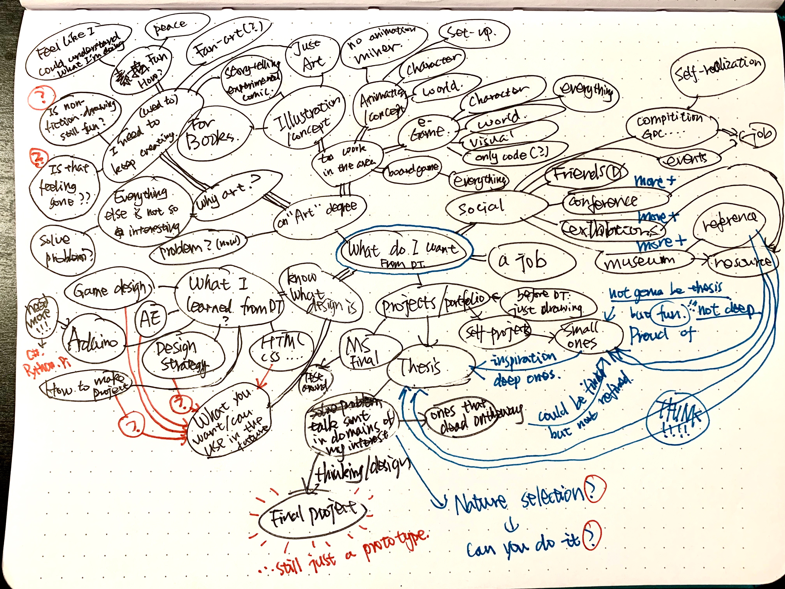

Week 2 Reflection
Make something:
My questions are:
- How to define the law of nature at our current state right now?
- If automated systems in our life keep developing and gain the ability to be self-maintained, what kind of impact will those systems have to the planet after human civilization is gone?
- If those systems could keep functioning, will they become part of the law of nature forthe newly evolved intellectual species on the planet？
- How would the new intellectual species adapt those systems that were built for the service of human society?
I tried to came up with a way to embody my questions but I don’t have answers for these questions yet. Whenever I start thinking about this problem, I will find that there are too many factors that I still have no control at all. This involves not only my understanding of nature and technology, but also my understanding of human beings as a whole and whether I have hope for the future of mankind. I think all these ideas are a bit overwhelming and so hard to be embodied with a simple prototype. So I decided to go back to the origin of all these ideas and return to the very basic idea that suddenly appeared in my mind: nature elements take over the cities and somehow it remains almost the same.

The herd migrates every day, which is the benefit of their superb mobility. Their daily itinerary is basically divided into two parts: lying still and running at high speed. They walked along the path through the jungle that that came from the stpes of their huge bodies, foraging and rest. At night, their light-gathering eyes leaves a path in the dark.

The huge existence in the jungle is divided into many types: trees, buildings and public utilities. The building is the largest living body in the jungle. They are the foundation of the entire forest, and they are almost unstoppable. They have a rapid growth speed and a long life span. But the condition for them to grow is extremely harsh: they grow only on large, open areas that are completely exposed.
This has something to do with how they grow. They first expand to the ground and around, occupy as much space as possible in this open space, grow their own roots, and absorb the surrounding nutrients. When their roots are fully developed, they will not expand again, but begin to grow at a high speed. The initial growth was very fast, but the building at this time did not look the same as the fully mature building. Their surface is rough and lacks detail, which is the price to pay for rapid growth.
When they grow to a certain height, they no longer grow taller. At this time, the building already has a body shape in adulthood, but the part that grows at this stage is not vital. It is more like a bracket, laying the foundation for further growth and shaping in the future. Then the interior of the building began to grow, and the complex organs and tissues used the existing huge body as a support and gradually formed inside the building. This process will gradually become invisible as the building cocooning, but this process will continue until the end of the building's growing span.
Then start building cocooning. Cocoon grew from the roots of the building and gradually wrapped the entire building. At this stage, the foreign trade of the building began to change, and different buildings will show different traits at this stage. Some buildings produce complex patterns, and some grow reflective structures that cover the entire surface. Finally, cocoon will peel off from the top of the building, showing the true look of a mature building.
When the building matures, other creatures in the forest begin to enter the building through the building's own internal structure, forming a symbiotic relationship with the building. These internal structures are a special structure that the building evolved over tens of thousands of years. It also proves that these complex symbiotic relationships are the basis of the existence of the building.
Make a plan for your secondary research:
I think my research divide into three different parts:
1) About current automated systems:
This area of research based on what is happenning right now in the area of automated systems as a foundation to better predict what will happened in the future. I’ll mainly do secondary research on current projects and products on automated systems. And then look into academic papers on the development of automated systems to speculate how much future automated systems will develop and how powerful it will be.
2) About concept:
I will go through academic papers on nature and technology to come up my own definition on those concept. This part will be heavily academic and should be the foundation of my thinking on how technology become part of the law of nature.
3) About future:
This research area mainly contain what future without human will be like. This research area will mainly based on science fictions. I’ll use those works as reference to brainstorm how human will come to an end, what earth will be like without human and what next intellectual species will be like. Then after I have a general idea on what will happened I’ll turn to related academic papers to find science research that support my idea.
Write a letter:
I write to Tommy who saw this project and start thinking about this topic:
 Weekly Reflection:
1) This week I came up first version of my rules for thesis. This is and will be a working progress and I will keep adding and altering rules until I have a fully decided concept/question. Then I’ll work on all the detail and decide on the final version of rules for my thesis.
Rules For Yufei’s Thesis:
- It should be a project of storytelling.
- The core of the project should not just be simple interaction trigger media mechanism.
- It should be designed with a clearly defined concept/question.
- It shouldn’t be showing up as a confident answer of any kind.
- It should be able to invoke some emotion from the audience without any explanation other than the project itself.
- It shouldn’t be designed with the idea of using certain kinds of technology.
- Yufei should learn whatever technology when comes in need. No media restrict.
- It should be interesting and not easily-predictable.
- It should have layers of different depth for different users instead of exposing everything on the surface.
- Respect the Audience. Do not assume they will just try to make sense of the project.
2) This week I also did a maid map on what I want to get from DT. I did this map to have a renew version of what getting through DT means to me and what kind of place my thesis project play in this progress. It leads to several questions that need to be answered and I think I’ll leave them for next week. After this map I sorta have a better view on how important my final thesis idea is and how to deal with those dead ideas that surly will come up during the process of thesis making. And now after a clearer way of knowing how to do with the ideas that couldn’t make thesis, I feel more free in deciding on an idea to carry on for at least this month unless a better idea came up.
3) Here is what I want to do next week:
- I want to have a through mind-map on domain and sub-mind map on the ideas that I find interesting.
- I want to make a list of all the separate ideas and starting to cross them off and separate them into small ideas that is don’t have enough depth to develop into a thesis projects and ideas that are not thought through yet but have potential.
- I want to have the list of thesis ideas down to three next week.
- I want to organize all the questions (not research-related) that came up from mind-maps and do another self-confrontation. Depends on how much I answer the questions I’ll make the following plan.
- If I haven’t change idea for the next week, make an Elena List on the current topic on nature and technology to brainstorm and coming up with prototype ideas.